Assembled an electric box (THE BLUE BOX) parts from Home Depot to test the (ACS712) Current Sensor. The box is simply an ordinary plug but the box contain the current sensor as shown in the pictures below:
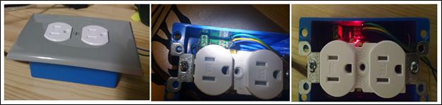As shown the sensor has three wires (Blue 5V, Green GND, and Yellow current signal) the current is measured of 5V range. All the AC circuit will be enclosed inside the box and the plastic box will isolate the AC so it will be safe to be around. The three wires connect to Arduino and the box is connected to a power source (AC outlet) by cable. The current and the white plugs are connected in series. To operate the sensor I have developed a code that will take the average of multiple reading and display them every 5 seconds with some filtering also.
New semester, first day in the Senior Design. Today our squad was missing Roger, who is “I guess” still in Cameroon. In class we went briefly over the syllabus and the semester plan. Today I also ordered the (2X16) LCD, Arduino programmer, breadboard.
Today I learned how to connect the LCD to the Arduino I took me three hours to figure out that almost all the video tutorials on the web do not use the Read/Write pin witch it basically just specify weather we are reading or writing to the address on the LCD. I thought that it was not essential since we are only writing but after three hours of work the lesson was that it does matter. The new (2x16) LCD will arrive on Sunday so I decided to work on (2x8) LCD that I have from previous semester. I manage to make it work then I connect the current sensor and the LCD to the Arduino UNO (easier to connect than Arduino Pro Mini our project microcontroller). As shown in the picture bellow the LCD display the (0.87 amp) consumed by my Laptop and Phone (connected to the blue box). The current goes drastically down as my battery laptop battery charged and processer stopped witch it indicate that the sensor is behaving properly. I also hocked a house appliance to the circuit for 5 hours just to observe the behavior of the circuit in long times and it ace the test.
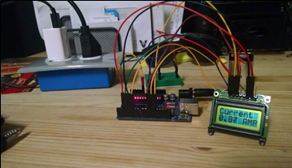I start today by attending the SD lab, where my group met we had a lengthy discussion on whether to use 9V battery or we use a power supply that convert AC to 5V. We had the Arduino, Current sensor, the Bluetooth, and the LCD all need to be supplied with 5V VCC. After talking to the TAs we decided to continue working with the 9V that is regulated to fit the VCC and at the same time we came up with AC to DC power supply. I know we were going to face this issue several weeks ago, because the 500mAh capacity of 9V battery won’t keep up with the demand of the component in the circuit. So I had already researched a chip from mouser (490-VSK-S3-5U) that will do just that with respect to the space available to design (smallest as possible). The second thing that discussed is the voltage and frequency sensing me and Noor had came up with a circuit that will use voltage divider to reduce the 120 AC voltage to just one volt and then we shift it using another voltage divider and 5V source to bias the voltage count for the negative part (also simulate it on Multisim). However the TAs (Isaac and Mr. Smart) gave us some modifications that will definitely help us move forward. Today I tried to replace the (2x8) LCD with the new (2x16) LCD but I had no luck making it work it lit up but does not display any characters. I even set the potentiometer for the contrast but still no luck. I start to think that the part might be defected.
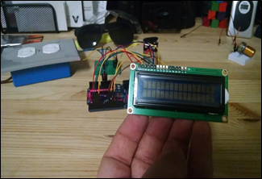I also came up with a list of parts that we are going to use to constrict the voltage sensing circuit (full wave rectifier, header pins, and resistors for the voltage divider). Feeling excited to program the Arduino Pro Mini with the new programmer that arrived today.
My team and I were supposed to meet at 10 AM to put a list of parts to order for Voltage and frequency circuit, but unfortunately halfway driving to UTA, I received a text from Noor requesting a meeting cancellation. Since the meeting was cancelled I decided to work on the Wiki page and learn how to set it up since I have never used it in the past. After some experimentation with the site, I was able to create my personal page, update my Daily Entries, and upload descriptions of our project to the page which can be found at Mavericks Wiki
The main task today was work the Voltage and frequency sensors which we were able to create their schematics. To double check I also simulate them in Multisim. After we have calculated the values of the voltage divider that will reduce the AC voltage to 5V to be manageable by a microprocessor and the full wave rectifier, we looked up parts on mouser that were capable of what need. We had a misunderstanding of the appropriate power rating on the resisters needed but after discussing that with Dr. Wetz, he clarified the confusion and since we will only measure Voltage we will not need to count for the current (current divider). At the end of today’s session, we put Picked up a shopping list for Bluetooth HC-06 module Amazon 10KΩ 1% Resistors X2 Mouser 330KΩ 1% Resistors X2 Mouser Full Wave Rectifier Mouser We also picked up some header pins for the microcontroller from Dr. Wetz’s lab.
Today I replace the Microcontroller from Arduino UNO to Arduino Pro Mini. The Pro Mini that I have purchased has no Bootloader in it. You would think something like that would be mentioned by the manufacture in the order but no. first no matter what I did the PC would not recognize the Pro Mini and the programmer won’t show any programing sign and after couple of minutes, it would display an error message on the PC. After lengthy Google research and contacting friends, I was able to come to the conclusion that it was missing the bootloader that should be installed on the ATmega328 16 HZ microcontroller. After diagnosing the problem, I used My UNO to download the bootloader on the Pro Mini as was specified on the Arduino web page. Then programing it was no hassle. I was able to program it and reconnect all the other parts to it and it run smoothly.
Today I worked on the LCD again. It took me an hour to figure out that the LCD is actually working fine but it is not showing until I change the contrast of the screen so I did that and it worked. And also I figure out how to make its LED work it took some soldering time but it worked. Now it is shining blue light with Black Text.
Order was not placed, Put all in new breadboard
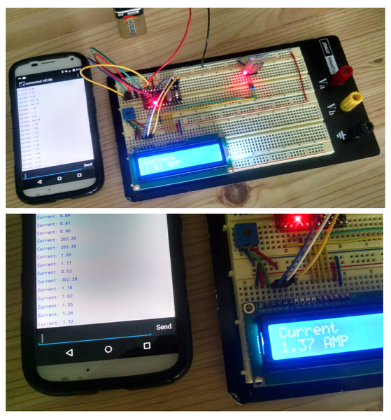Today we received the parts for the voltage and frequency circuit (2 resistors, a full Wave rectifier chip and fuses) I have built the circuit and Noor and Roger made sure that I have the right connections after I was done. We hock the circuit to a function generator. However the result were not that promising on the oscilloscope, it outputs one full wave and a small hump next to it all positive. After consulting with Isaac, he speculate that it might be that our function generator do not supply much current to get the rectifier working, since it is rated for a very powerful power application, so he suggested to build a regular rectifier from 4 diodes. We order the diodes and they should be ready for next meeting.
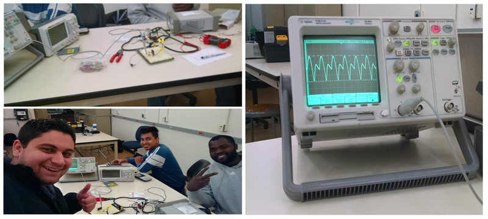Today was an interesting day, we received all the for the voltage circuit which were four diodes. When we test this circuit with the function generator that simulate the AC source. We were not able to trigger the 4 diodes to work because the current is just too low, we run in the same problem with the full wave rectifier chip from before. The solution to this problem was to hock it directly to the AC wall plug. When we hock the oscilloscope to the output terminals to see the behavior of the output and connect to the AC Wall the 150mA fuse blow up. After three tries we were out of fuses. Then we decided to hock the oscilloscope and the AC wall plug to each other in the breadboard to check the behavior of AC in that plug and ones we hock it to the wall a big explosion with loud bang and smoke was everywhere. We has no injures but a small spot was burned on the breadboard. We figure that it might be an isolation problem since the circuit worked when Isaac tried an AC to AC adapter and we had a correct reading on the output of the oscilloscope. Now we will need a transformer.
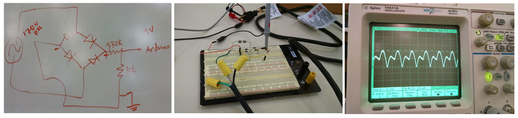Today Roger was in Austin, so he did not Show up to class. Since it was only Noor and I, we spend most of the time planning our voltage circuit and trying to prevent the circuit from exploding again. Isaac had emailed us a transformer that was for audio purposes that will cover our frequency range but we decided not to go with it because of voltage level (usually low level of voltages 5V are associated with Audio). Then we have had couple of transformers to compare, so we decided to go with a stepdown transformer from 120V to 24V. We also had to order some more 150mA fuses which we ordered 5 fast blow. We also ordered 2X (500mA fuses) slow blow just in case we run in to some unexpected problems with the other fuse. We decide to order the voltage divider resisters after testing the transformer because as it was pointed to us, sometimes the values that we Shop for might be slightly different than the ordered parts. So we will hold off on that for now. We expect the order to arrive tomorrow.
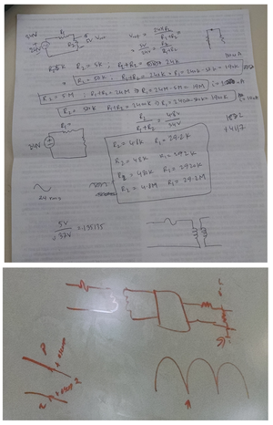I started today experimenting with the timers (TimerOne) on Arduino. I have some experience with timers in the past when we briefly went over them in other classes mainly for Pic microcontrollers. In the start I familiarized myself with how timers work in Arduino after some research I was able to find a library for timers for Arduino which is not included with the original Arduino Program. After some digging and experimentation, I was able to write an algorithm (code) for a clock using timers and interrupts that will be useful to calculate the total energy. Because Energy is power multiplied by the total duration (time) of operation. After I was done with the code, I have made it run for a while to test its flows if any. After couple of attempts and modifications, it was finally ready and I ran it for 6 hours with no problems. This clock displays (hour: minutes: seconds) and I can just as easily modify it to include days also.
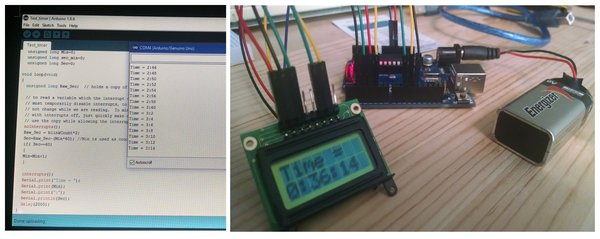Today, we also received the transformer's order, Roger and Noor worked on wiring it and assembling the circuit. unfortunately, the transformer is huge and it is really heavy but it work perfectly so we decided to used it to develop the code for Voltage and frequency starting next session hopeful it will take a session to implement our ideas for the code and another session for debugging.
Today my team and I presented our Midterm project progress in front of the Senior Design class and our instructor and sponsor Dr. Wetz and the TA’s. After delivering the presentation, Dr.Wetz pointed out some issues and pointers that will help us in future and ongoing things in this project.
Our final Voltage and Frequency sensor hardware (which will be parallel to the load) is consist of a step down transformer (3:1 ratio) so from 120 V to 40V then the Voltage divider will reduce it to approximately 5V. I had to change our initial plan to not include a transformer because our issue with Isolation. For the full wave rectifier, it turns out that the microcontroller treat the negative half of the wave as zero values (half wave rectifier) so we can just skip the full wave rectifier for now.
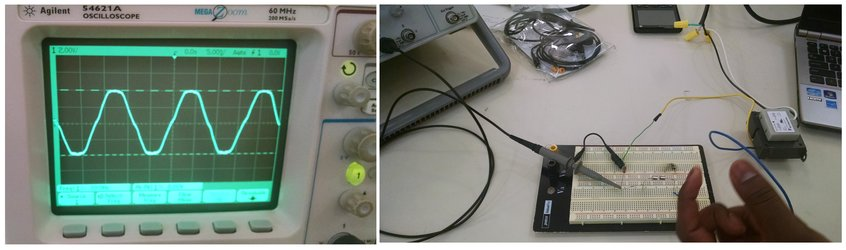Roger and I today start sketching for the packaging for the hardware of the Watt-Meter. While Noor is still working on the Android App development. Roger and I have developed a preliminary plan or a sketch to allocate the parts of the watt-meter and best spot of soldering them in the package box with respect to the parts dimensions and the shortest possible route for connection. The sketch below explain the placing inside the package box:
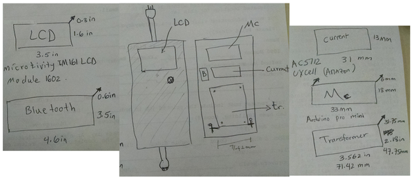Today in the class we worked on packaging (housing) and how it should be shaped. Roger also worked on simulating the circuit that will power the microcontroller which is simply tapping to the voltage after the transformer and run it throw a low pass filter (RC). Resister to limit the current and capacitor to charge and discharge to keep the voltage constant (AC to DC). Then a voltage regulator with output of 7 to 9 Volt because the Arduino Pro Mini has a regulator that accept raw voltage from 5 to 12 V. We also ordered the parts for the circuits and they should be delivered tomorrow so we would be able to build on Monday. On the Other hand I also worked on the Bluetooth code for the App. Since Noor had some modification that wanted me to apply to the code like updating every 10 second instead of every second, which I completed the task
Today in class we worked on the powering circuit with Isaac, we did some tuning and tweaking and we ordered another Voltage regulator and fuse holders and two of (15Amp 250V) fuses for the main line fuse. We also double check the measurement of the powering voltage level of the microcontroller which is about 4.5V and the output of the transformer. We decide to change to way we place the component in to the housing. Now we will have to layers of perfboard instead of one.
We finish soldering the circuit together now we have a circuit that can supply 10V DC to power the microcontroller to power the Arduino which that can get from 5-12 V on the Raw pin to power it up.
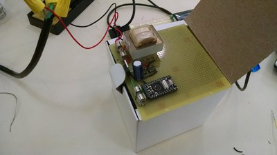Today we add the current sensor and the voltage circuit and the Bluetooth module to the circuit and i solder them up after laying out the connection and soldering points and i test them and they are preforming well.
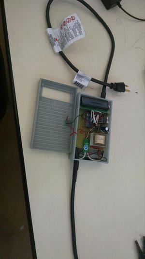Today me and roger but all the circuit in the box we had to trim the board about half an inch to fit it as we planed before and we layed out the connection wires and heat-shrink their connections. but the lid of the box was smaller and we had to reprint it again and also Noor wanted to test its durability and as always he broke it so we have to wait till tomorrow, but we have some mistakes in the lid so me and roger redesigned again to have some edges on tom of the bottom part.
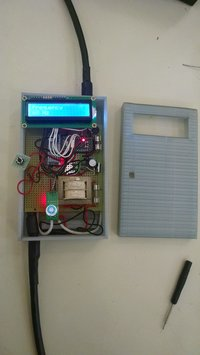We got the 3D printed box from the library and it is perfect but we have to trim the bottom place so it would fit perfectly and it is done for presentation. we also finish the demonstration today and every thing checked out to be functioning according to the plan.
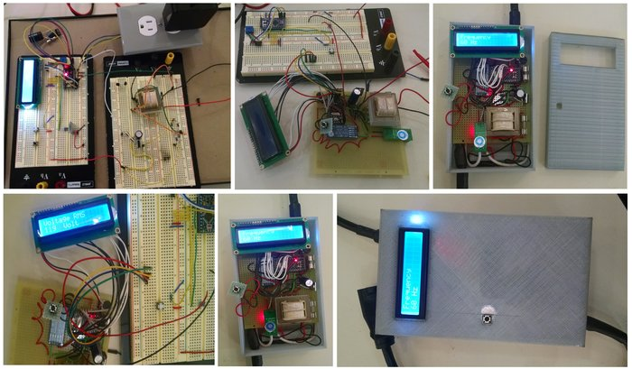